地政学
モナコはフランスに囲まれた小国だが、主権、税制、外交、金融監督、海洋政策を自ら持つ。地中海と欧州富裕層ネットワークの結節であり、小ささが交渉力と脆さを同時に生む政治都市でもある場だ。欧州外交にも影響する。
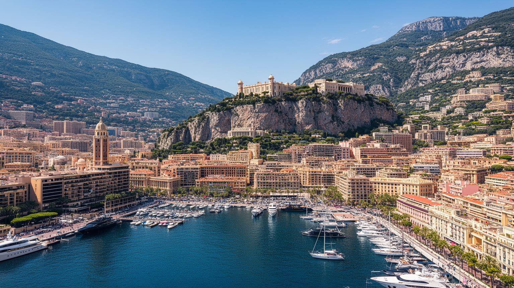
🇲🇨 モナコ公国 / 地中海 / World City Atlas
二平方キロほどの斜面に、主権国家、金融センター、港湾リゾート、F1の街路、宮殿、カジノ、越境通勤、世界最高水準の不動産圧力が折り重なる都市国家です。
都市の骨格
モナコは小さなリゾートではなく、地中海の断崖を削り、海を埋め、制度を磨いて世界の資本と人を集める都市国家です。華やかな水辺のすぐ背後に、越境通勤、住宅不足、密度、金融規制、環境適応の課題が見えます。
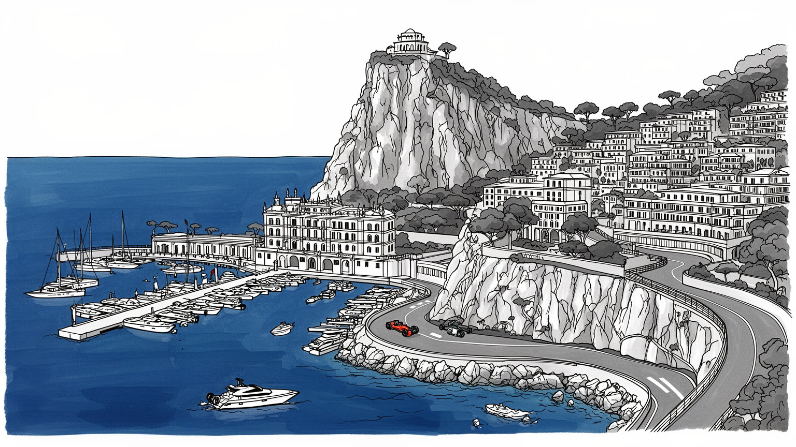
モナコはフランスに囲まれた小国だが、主権、税制、外交、金融監督、海洋政策を自ら持つ。地中海と欧州富裕層ネットワークの結節であり、小ささが交渉力と脆さを同時に生む政治都市でもある場だ。欧州外交にも影響する。
金融、不動産、観光、イベント、港湾サービスが高い付加価値を生む。だが日々の都市を支える多くの労働者はフランスやイタリアから通勤し、住宅費と越境交通が雇用構造を決める重要な都市だ。季節雇用も重なる。
公国の儀礼、カトリックの祝祭、王室行事、グランプリ、芸術祭、バレエ、海洋研究が都市の暦を作る。フランス語、イタリア語、英語、モネガスク語の記憶が混じる小さな国際都市でもある場だ。海の教育も続く街。
旅行者はカジノ、港、宮殿、旧市街を歩くが、住民は斜面移動、保育、学校、医療、通勤、物価、限られた公共空間と向き合う。華やかな景観の下に、日常を回す密な都市技術がある街だ。買い物も坂と近い街である。
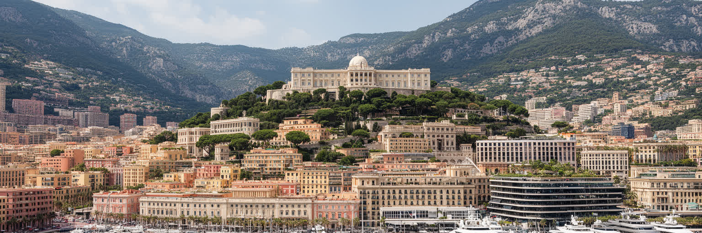
モナコは都市であると同時に主権国家である。二平方キロほどの領土に宮殿、政府、裁判所、警察、港湾管理、外交窓口、学校、病院、住宅、観光施設が収まり、国家の制度が徒歩圏で見える。フランスとの関係は密接で、国境は日常の道路や鉄道の中に溶け込むが、税制、居住資格、企業規制、金融監督、国際機関での立場は独自性を持つ。小国であることは、意思決定を速くし、都市ブランドを明確にする一方、住宅、労働力、水、廃棄物、交通、医療の多くを周辺地域との協力に依存させる。モナコを読むには、豪華な港だけではなく、限られた領土で国家を運営する技術を見る必要がある。旗や宮殿の象徴性は、狭い行政空間、厳密な登録制度、国境を越える通勤者、国際的な透明性要求と結びついている。小さな国家ほど、外からの資本、近隣国の規則、欧州の金融監督、観光需要、気候変動の影響を強く受ける。モナコの主権は孤立ではなく、周囲との交渉を細かく続ける力によって成り立つ。華やかさの背後で、国家と都市が同じ面積を共有していることが、この場所の特異性である。国境が近すぎるからこそ、治安、救急、鉄道、道路、雇用、学校の問題は国内だけで閉じない。小さな国家の独立は、周辺地域と毎日調整する実務の厚さによって守られている。外交の大きさより、運用の緻密さが主権を支える。
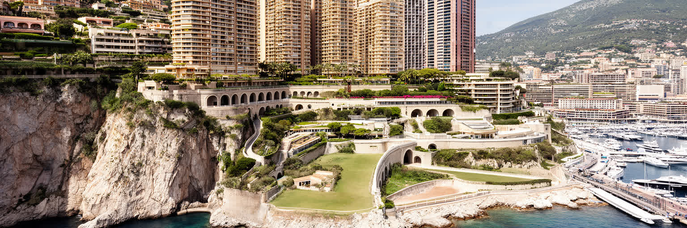
モナコの都市形は、地中海と背後の急斜面に挟まれた地形から生まれる。海岸沿いの平地はほとんどなく、道路、鉄道、トンネル、エレベーター、階段、立体交差、高層住宅が、わずかな土地を何層にも使う。モンテカルロ、ラ・コンダミーヌ、フォンヴィエイユ、旧市街の岩山は近い距離にあるが、標高差が移動の感覚を変える。都市は海を埋め立て、港を整え、地下に施設を入れ、崖に建物を張り付けながら成長してきた。新しい海上拡張は土地不足への回答である一方、海洋生態系、景観、建設費、気候リスクをめぐる問いも生む。モナコの密度は、単に人口が多いというより、国家機能、富裕層住宅、観光、物流、学校、宗教施設、イベント会場が極端に近いことを意味する。坂を上がる数分で、港の喧騒から静かな住宅、宮殿周辺の石畳、鉄道駅、フランス側の街へ移る。地形は都市を美しく見せるだけでなく、通勤、配送、避難、建設、公共空間の設計を難しくする。斜面と海を読むことが、モナコの経済と暮らしを理解する入口になる。限界まで使われた土地では、わずかな空地や眺望も社会的な価値を持つ。都市の移動は水平ではなく垂直で、エレベーターや階段は道路と同じくらい重要な公共インフラになる。高密度の美しさは、こうした見えにくい立体的な接続に支えられている。地形そのものが都市計画の制約であり、魅力でもある。
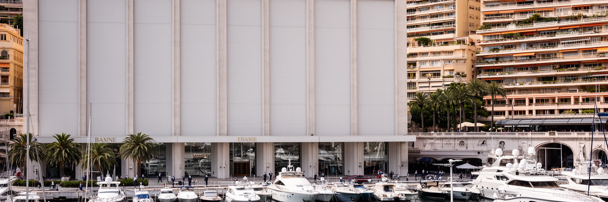
モナコ経済を支える柱の一つは金融である。プライベートバンキング、資産管理、保険、法律、会計、ファミリーオフィス、法人サービスが、国際的な富裕層の居住と結びつく。個人所得税を持たない制度や治安、地中海の生活環境は、資本と人材を引き寄せる大きな要素になってきた。しかし金融都市としての強さは、秘密性だけで維持できるものではない。マネーロンダリング対策、制裁、税務情報交換、顧客確認、実質的所有者の把握、国際監視への対応が、都市の信用を左右する。小さな国では一つの不祥事が評判全体に響きやすく、透明性の不足は銀行や不動産市場だけでなく、国家ブランドそのものを傷つける。モナコの金融を読むには、豪華なヨットや高級住宅の表面ではなく、規制当局、専門職、国際基準、近隣国との関係が作る制度的な緊張を見る必要がある。金融は高い雇用と税外収入を支えるが、地域の物価と住宅圧力も押し上げる。資本を受け入れる都市は、その資本がどこから来て、どのように使われるかに責任を持たなければならない。信頼を得る努力が、モナコを単なる避税地の記号から、制度で競う小国家へ変える条件である。銀行窓口の静けさの背後には、審査、監査、法務、情報管理、国際照会に応じる専門職の仕事がある。華やかな資産の流入ほど、地味な確認作業が都市の信用を支える。
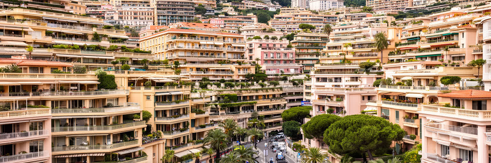
モナコの不動産は、世界でも特に高価な市場として知られる。海と山に挟まれた面積の小ささ、税制、治安、国際的な居住需要、港とイベントの魅力が、住宅を単なる生活空間ではなく、資産、身分、制度アクセスの入口に変えている。高層住宅の窓からは地中海が見えるが、その足元では住宅を確保できる人、通勤で支える人、公営・準公営住宅に頼るモネガスク市民、周辺のフランス側に住む労働者の差が大きい。居住資格は、税務、銀行、学校、医療、家族の将来計画と結びつくため、住宅市場の動きは都市の社会構造を直接変える。新築や再開発は土地不足を和らげるが、建設現場、騒音、景観、海岸環境、既存住民の生活にも影響する。モナコでは一戸の部屋の価格が、地元で働く多くの人の生涯所得を超えることがある。富裕層を引きつける都市が、日常を支える保育士、清掃員、警備員、販売員、調理人、看護師をどこに住まわせるのかは重要な政治課題である。不動産の希少性は都市のブランドを強めるが、過度な排他性は都市を生活の場から展示空間へ変えてしまう。住宅を読むことは、モナコの富の仕組みと限界を読むことである。学校に近い部屋、坂を避けられる部屋、家族で住める広さは、数字以上の価値を持つ。居住を資産だけで扱うほど、都市を支える生活の連続性は弱くなる。住める人の少なさは、国の未来をめぐる問いでもある。
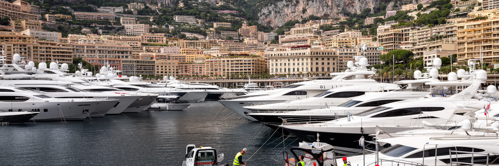
モナコの港は、富の象徴であると同時に、細かな実務が積み重なる労働空間である。エルキュール港にはヨット、クルーズ的な来訪、イベント用の仮設施設、飲食店、整備業者、警備、清掃、燃料、廃棄物処理、供給物流が集まる。海上の華やかさは、船体清掃、修理、電装、食品搬入、係留、気象確認、保険、乗組員の暮らしによって支えられる。港はグランプリやヨットショーの舞台にもなり、都市の国際的な映像を作るが、同時に限られた海岸線を誰が使うのかという公共性の問題も抱える。水辺が高級化するほど、普通の散歩、釣り、子どもの遊び場、日常の海へのアクセスは狭くなりやすい。モナコの港湾経済は、富裕層消費を受け入れるサービス業でありながら、環境管理にも責任を負う。排水、燃料、騒音、光、海洋生物への影響は、地中海の美しさを売りにする都市ほど慎重に扱う必要がある。港を眺めると、超高額資産と現場労働、観光と規制、私的な所有と公共の海が近い距離で接していることが分かる。モナコの水辺は見せるための景色である前に、都市経済を動かす作業場でもある。港に並ぶ船は所有者の富を示すが、補給や整備の時間表は都市の裏方を動かす。海辺の一等地で労働と余暇が重なることが、この港の緊張を作っている。散歩道から見える静かな水面の下で、港は物流、廃棄物、警備、観光を調整し続けている。
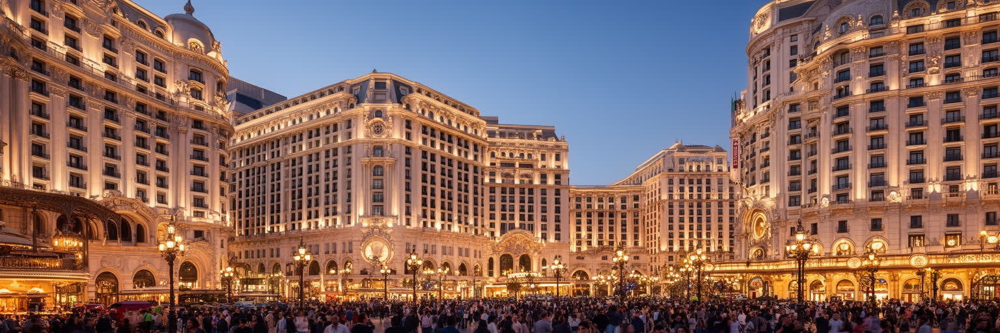
モナコの観光イメージを作った中心には、モンテカルロのカジノと高級ホテル、劇場、庭園、海辺の散歩がある。十九世紀以降、鉄道とリヴィエラの保養文化が結びつき、モナコは小国の財政と都市開発を観光に賭けて成長した。カジノは単なる賭博施設ではなく、建築、社交、音楽、ファッション、金融、新聞報道、国際的な富裕層の移動を束ねる装置だった。現在の旅行者はカジノ、カフェ・ド・パリ、オペラ座、ホテル街、海洋博物館、宮殿、旧市街を短い距離で巡る。だが観光都市の魅力は、贅沢な消費だけで成り立つわけではない。客室を整える人、料理を作る人、警備する人、夜の清掃、交通整理、イベント設営、港の案内が、訪問者の体験を支える。観光は都市に収入と国際的な認知をもたらす一方、物価、混雑、労働時間、公共空間の使い方を変える。モナコのカジノ的な華やかさは、都市の歴史を理解する入口だが、それだけで都市を説明すると、そこで暮らし働く人の姿が消えてしまう。観光の記憶を読むには、優雅な建物と裏方の労働、国家財政と都市演出を同時に見る必要がある。保養地としての柔らかな光は、実際には厳密な警備、清掃、予約管理、季節労働に支えられる。短い滞在の快適さは、多くの人の反復作業が作る都市サービスである。観光の舞台装置は、毎朝の準備と夜の片付けによって保たれている。
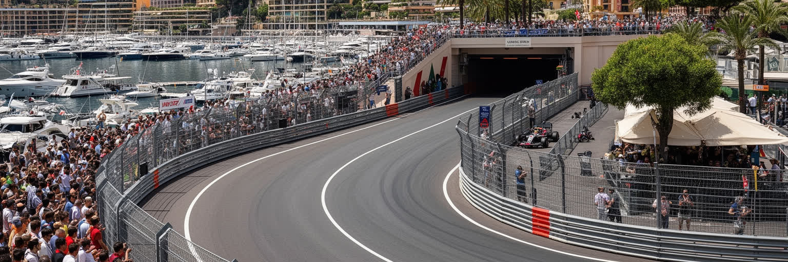
モナコ・グランプリは、都市そのものを劇場に変えるイベントである。普段は通勤、配送、散歩、バス、タクシーが使う坂道、港沿い、トンネル、ヘアピンカーブが、数日間だけ世界で最も有名な市街地コースになる。F1はモナコの映像を世界へ流し、ホテル、飲食、警備、仮設スタンド、放送、スポンサー、港湾サービスに大きな需要を生む。だがイベントは都市を一時的に占有し、道路規制、騒音、価格上昇、通勤の不便、住民の生活リズムの変化ももたらす。小さな都市では、世界的イベントの利益と負担が極端に近い距離で発生する。モナコのF1を読むには、速度の華やかさだけでなく、コースを組み立て、バリアを置き、観客を誘導し、救急と安全を確保し、終われば街路を日常へ戻す都市運営を見る必要がある。グランプリは、都市のブランド、技術、交通、警備、観光、メディアを一つに束ねる年中行事であり、モナコが小ささを世界的な注目へ変える方法でもある。同時に、街路は住民の生活基盤であり、イベント後には買い物、通学、配達、通勤の道へ戻る。舞台と日常の切り替えの速さが、この都市の運用能力を示している。レースの音が消えたあと、同じカーブを配送車や歩行者が使う。都市が競技場になる特異性は、日常へ戻る手際まで含めて評価される。観戦の熱気は短くても、準備と撤収は都市の長い季節作業である。
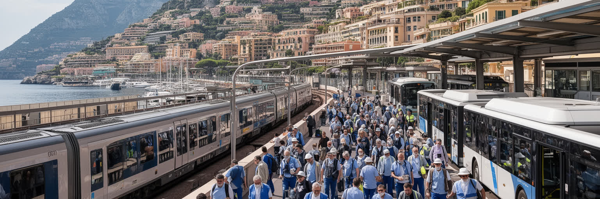
モナコの昼間人口は、居住人口だけでは説明できない。多くの労働者がフランス側のニース、マントン、ボーソレイユ、ロクブリュヌ、さらにイタリア方面から鉄道、バス、車で通勤し、金融、ホテル、飲食、小売、建設、清掃、警備、医療、教育、港湾サービスを支える。モナコで働くことは高い賃金や安定した需要につながるが、住む場所は国境の外になることが多い。朝夕の駅や道路の混雑は、この都市国家が周辺地域の住宅と交通に依存していることを示す。越境労働は制度の違いも伴う。社会保険、税、通勤費、労働時間、保育、学校、医療、緊急時の対応が、国境を挟んで調整される。華やかなホテルや港のサービスは、近隣地域で暮らす労働者の時間と移動によって成立する。都市の豊かさを語る時、そこに住む富裕層だけでなく、毎朝外から入り、夜に帰る人々の生活を含めなければならない。モナコの小ささは、労働市場を外へ広げることで補われている。国境は観光客には見えにくいが、通勤者にとっては賃貸、列車、渋滞、家族の予定に深く関わる現実である。都市を支える人の住まいが都市の外に押し出される構造は、モナコの重要な社会問題である。鉄道の遅れや道路の渋滞は、単なる交通問題ではなく、ホテルの勤務開始、保育の迎え、夜勤後の休息を左右する。越境通勤の負担まで含めて、都市経済は評価されるべきである。
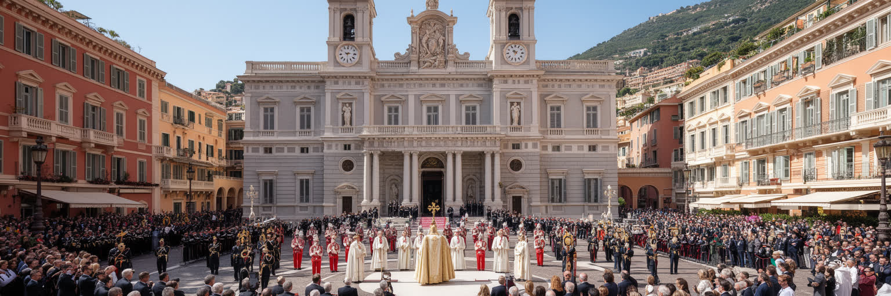
モナコの政治文化は、王室の儀礼、カトリックの暦、旧市街の空間と深く結びついている。宮殿の丘に上がると、港や高層住宅とは違う尺度で、衛兵交代、国家行事、聖堂、細い路地、海を望む広場が現れる。グリマルディ家の歴史は観光の物語であると同時に、国家の継続性を示す制度的な記憶でもある。大聖堂や聖デヴォートへの信仰は、公国の保護者をめぐる祝祭や市民的な結束に関わり、宗教は個人の礼拝だけでなく、国民的な儀礼の形を取る。もちろん現在のモナコには多国籍の居住者と労働者が暮らし、信仰や無宗教の立場も多様である。カトリック的な象徴が強い都市で、多文化の生活がどのように共存するかは重要な視点になる。宮殿や聖堂を訪れる観光客は、絵葉書的な美しさだけでなく、小さな国家が自らの正統性をどのように表し、住民や訪問者に共有させているかを読み取れる。儀礼は過去を飾るものではなく、政治的な安定、観光の演出、市民の帰属意識を結ぶ実践である。小さな国では、行事の一つ一つが都市全体の記憶として見えやすい。祝祭の日には、旧市街の狭い空間が国家の舞台になり、住民、観光客、警備、聖職者、行政が同じ動線を共有する。儀礼の距離の近さが、モナコらしい公共性を作っている。多国籍の居住者が増えるほど、伝統行事は閉じた象徴ではなく、都市の共有記憶として説明され直す必要がある。
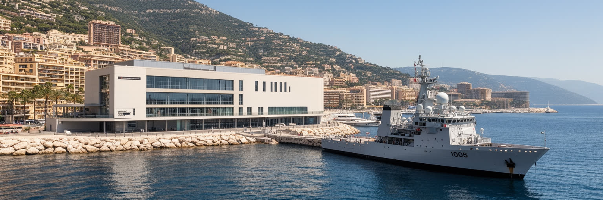
モナコは海を背景にした都市であるだけでなく、海洋研究と環境外交を都市ブランドの一部にしてきた。海洋博物館、海洋保護、地中海の生物多様性、海面上昇、海水温の上昇、プラスチック汚染、沿岸開発は、観光の景色と同じ場所で起きている問題である。小さな海岸線に港、埋立地、住宅、道路、イベント、船舶が集中するため、環境負荷は見えにくくても強い。モナコが海を守ると語るなら、研究や国際会議だけでなく、建設、排水、船舶管理、エネルギー、廃棄物、緑地、公共交通の実務に反映させる必要がある。海洋保全は遠い自然保護ではなく、都市の存続に関わる政策である。気候変動で高潮や熱波が強まれば、低い港湾部、高価な海岸開発、観光シーズン、屋外労働、電力需要に影響が出る。富のある都市だからこそ、適応技術を示す責任も大きい。モナコの海は、眺望資産であると同時に、脆い生態系であり、国際的な環境発信の根拠でもある。海辺を歩く時、透明な水と白い船だけでなく、都市がどれだけ自分の負荷を管理しているかを見ることが大切である。小国の環境政策は面積が小さい分だけ、結果も矛盾も見えやすい。海を都市の価値にするなら、港湾利用、建設、観光、研究を同じ基準で点検し続ける必要がある。美しい海を前提にした都市ほど、その海を傷つけた時の代償も大きい。今後も問われる。
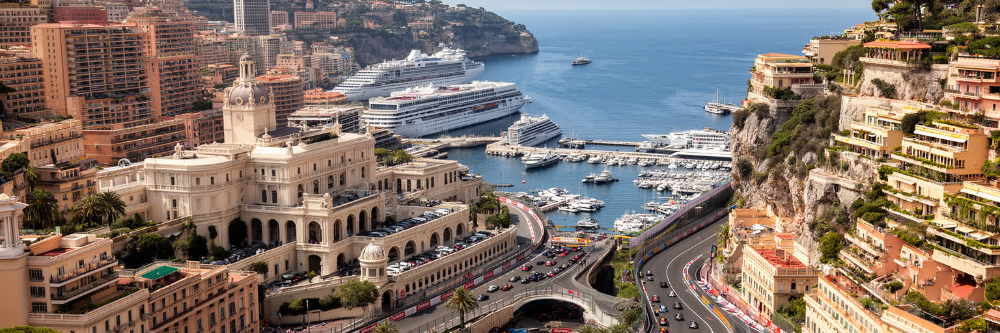
モナコを読む時、最初に見えるのは富と眺望である。港のヨット、カジノ、宮殿、F1の街路、地中海の青さは強い印象を残す。しかしこの都市国家の重要性は、豪華さだけでは測れない。極小の領土に主権、金融、不動産、観光、外交、宗教儀礼、海洋研究、越境労働、住宅政策、環境適応が圧縮されていることこそが核心である。モナコは大都市のように広がれないため、土地、時間、道路、海岸線、制度の一つ一つが高い価値を持つ。その密度は効率と美しさを生むが、同時に排他性、価格上昇、通勤負担、公共空間の限界も生む。周辺のフランスとイタリアから来る労働者がいなければ、金融街もホテルも港も動かない。海を埋めて成長する都市は、海洋環境を守る責任から逃れられない。小国の主権は、国境の外との依存を隠すものではなく、むしろ交渉し続ける力として理解できる。モナコは世界経済の富がどのように場所を選び、都市を変え、日常の労働に支えられるのかを見せる。短い散歩で国家の制度、資本の集中、観光の演出、生活の制約を一度に見られる都市は少ない。だからモナコは、規模の小ささに反して、現代都市を考えるための濃い標本である。都市の華やかな表面を一枚めくると、土地の限界、制度の信用、通勤の負担、海の脆さが同時に現れる。そこまで含めて見る時、モナコは小さな例外ではなく、世界都市の縮図になる。